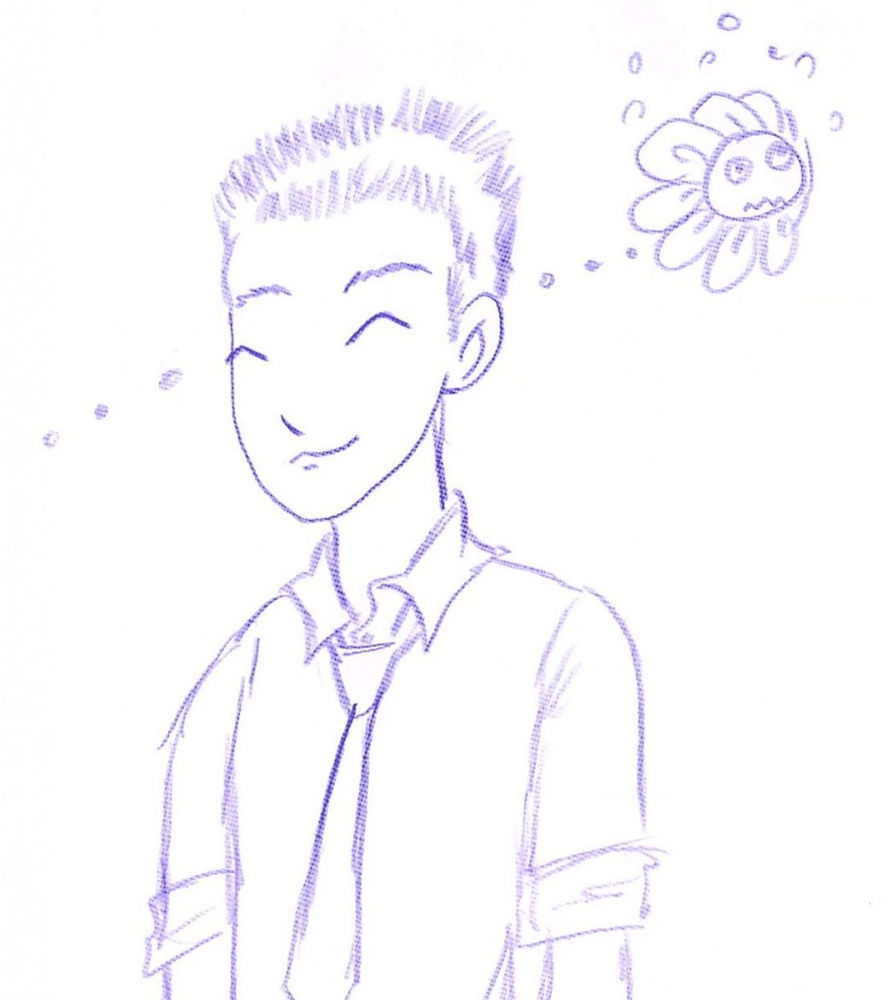

～ここは俺のチラシ裏～
日記
神奈川工科大学 大学院 工学研究科 博士前期課程 情報工学研究科 の1年です。
白井研究室では、展示コンテンツのメインプログラマーを務めています。
現在就活スタート中！
連絡先はこちら
Twitter:komenohito
Facebook：藤村航
主なプロジェクト
・CartooNect
・PARAOKE
・瞬刊少年「マルマル」
主なスキル
・C#：XNA Game Studio 4.0 を用いて体験型コンテンツや研究用プログラムを開発。HLSLを用いたシェーダーも実装可能。
・Kinect:発売直後からコンテンツ開発に用いている。姿勢認識アルゴリズムの特許を取得！
・Unity：マップ生成やキャラクター操作を実装できる。
・Python：現在勉強中。将来的にFacebookやTwitterと連携できたらいいなと妄想中。

Laval Virtual 2010 で「CartooNect」を展示中に描いてもらいました！
Meta

コメントを残す